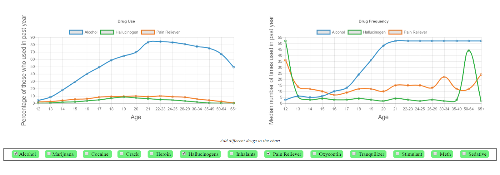

Henry Dunphy's CS3041 Portfolio
https://www.cdm.depaul.edu/academics/Pages/MSInHuman-ComputerInteraction.aspx
PROJECTS
__________________________________________________________________________________________________________________________________
Design for Others
In this project, my team and I worked to redesign the Technocopia mobile website for tourists visiting Worcester. We used adobe XD to help design the mobile webpages. In order to reach our target audience we wanted to make sure directions to the site were clear. We also wanted to include a menu for different languages in case the users were not fluent in English.

__________________________________________________________________________________________________________________________________
Design For Understanding
In this project, my team and I split into two groups. We created graphs to dispaly the same data, but with a different purpose in mind. My group created a graph for understanding which would display the data in a clear and consise way. The design was meant to be minimalistic and display the data in a way that did not influence the user. We created a website to display our graph and used the chart.js library.
__________________________________________________________________________________________________________________________________
Design For Tension
In this project, my team and I designed a chat-bot that was supposed to bring up a challenging topic. We decided to have our bot talk about artificial intelligence and the effects it could have on humanity. To create the bot we used FlowXO and connected it to our class slack channel.
Here is a link to our demo video.__________________________________________________________________________________________________________________________________
Design For Wellbeing
In this project, my team and I created a game that attempted to make you happy by asking you to not laugh while we cycled through different gifs. We put this game on a website and used Affectiva to determine if they laughed or not.
ABOUT
My name is Henry Dunphy and I am a Computer Science Major at Worcester Polytechnic Institute, set to graduate May 2019. My hobbies include playing basketball, watching movies, and playing video games with a good story. Ever since I was a kid I have always been interested in computers and experimented with what they could accomplish. In my time at WPI, my interest for computers has only deepend and I have found a passion for user interface design. Human Computer Interaction seemed like a great class to help me pursue this passion and learn a great deal on proper techniques.
CONTACT
Email: hdunphy@wpi.edu
Github: hdunphy